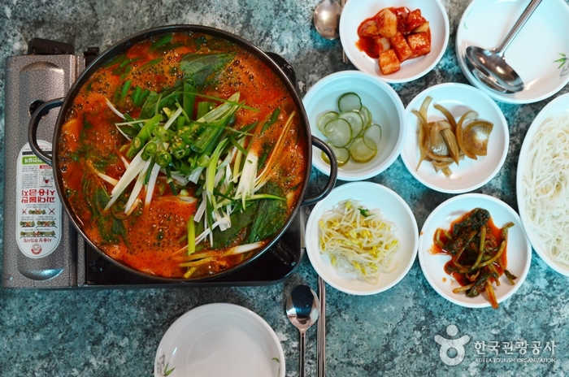

장소 상세보기
|  |
| 번호 | 21 |
|---|---|
| 분류 | 음식 |
| 장소 번호 |
F0021 |
| 장소명 | 벵게식당 |
| 장소 주요 설명 |
고양시청 주변의 ‘벵게식당’은 허름한 외관에도 늘 손님들이 끊이지 않는 털레기 전문점이다. |
| 장소 상세 설명 |
미꾸라지를 통째로 넣고 푹 끓여내기 때문에 국물이 진하고 깊은 맛이 특징이다. 직접 담근 고추장을 풀어 얼큰하고 칼칼하면서도 뒷맛을 개운하게 잡아준다. 취향에 따라 미꾸라지는 갈아서 먹을 수도 있다. 20년 가까이 한자리를 지키고 있는 ‘대자골 토속음식’도 경기 북부식 털레기를 낸다. |
| 주소 | 경기 고양시 덕양구 원당로33번길 42-9 |